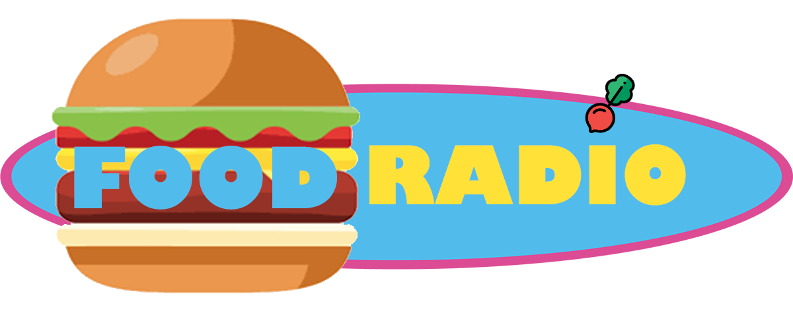

⇩
Food Radio
« La radio numéro 1 sur la nourriture »
Ecoutez notre jingle !
Bienvenue sur Food Radio,
vous y trouverez les dernières actualités sur la nourriture
En écoutant food Radio, vous serez informé de toutes les informations croustillantes sur le monde de la nourriture.
En vous branchant tous les jours à 8h, 12h ou 20h,
vous écouterez le journal culinaire du jour.
Mais aussi, à tout moment de la journée, vous serez directement informé si une information vient de tomber via nos breakings food.